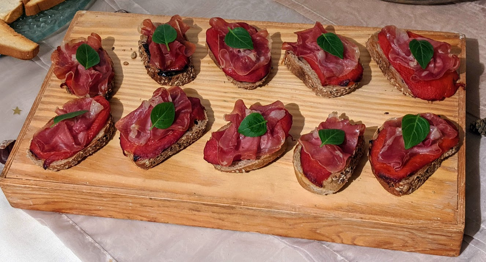

Toasts aux poivrons rôtis

Pour 16 toasts :
- Une baguette aux céréales
- Un poivron jaune
- Un poivron rouge
- 8 fines tranches de jambon de Parme
- Une tranche de basilic frais
- Huile d'olive
- Faire préchauffer le four à 180°C (thermostat 6). Couper les poivrons en deux, enlever les pépins et les parties blanches, et les couper en bandes de 5 cm de large.
- Étaler les bandes de poivrons dans un plat à gratin (la peau au-dessus), les arroser d'huile d'olive, et les enfourner pour une heure. Les sortir, et détacher la peau avec une fourchette.
- Découper la baguette en tranches fines en diagonale, et les badigeonner de l'huile du plat à gratin. Couper les tranches de jambon en deux, ciseler le basilic.
- Déposer sur chaque toast un morceau de poivron rouge, un morceau de poivron jaune, le jambon de Parme et un peu de basilic ciselé. Servir tiède.
Retour à la liste des recettes